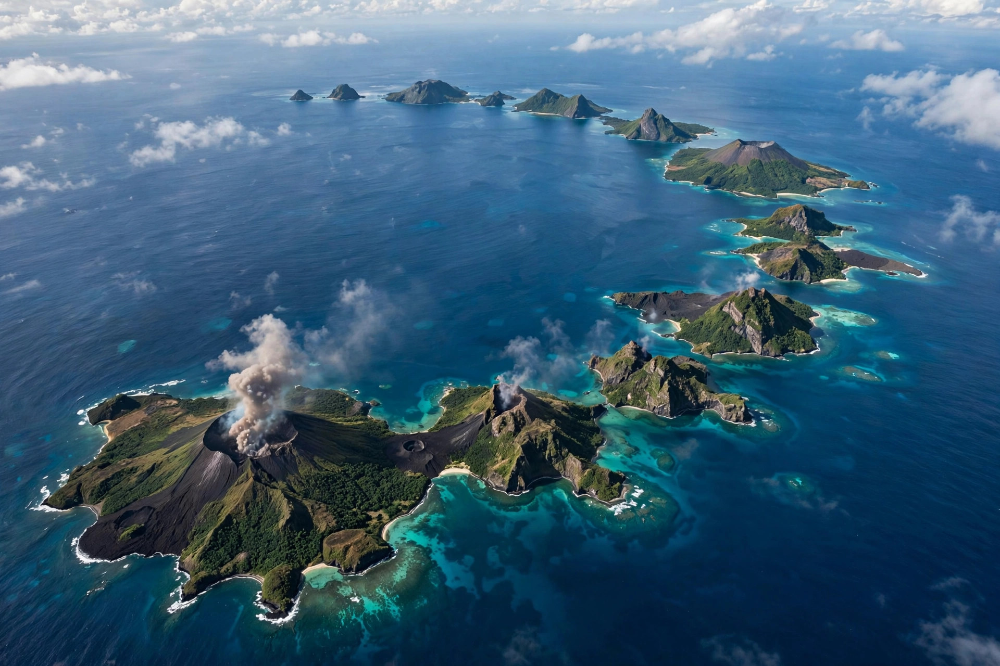

A volcanic arc is a curved chain of volcanoes that forms above a subducting tectonic plate. At a subduction zone, one plate slides beneath another into the mantle; water and other volatile compounds released from the descending slab lower the melting point of the mantle above it (the mantle wedge), generating magma that rises to fuel a line of volcanoes roughly parallel to the deep-sea trench.

Volcanic arcs sit on the overriding plate some 100–300 km from the trench, where the subducting slab has reached a depth of roughly 100 km. Arc magmas are typically enriched in water and large-ion lithophile elements, producing andesitic and dacitic eruptions that are more explosive than mid-ocean ridge basalts. Together, the world's arcs form much of the Pacific Ring of Fire and account for a large share of Earth's active volcanoes. Behind the arc, a back-arc basin may form where the overriding plate is stretched thin.